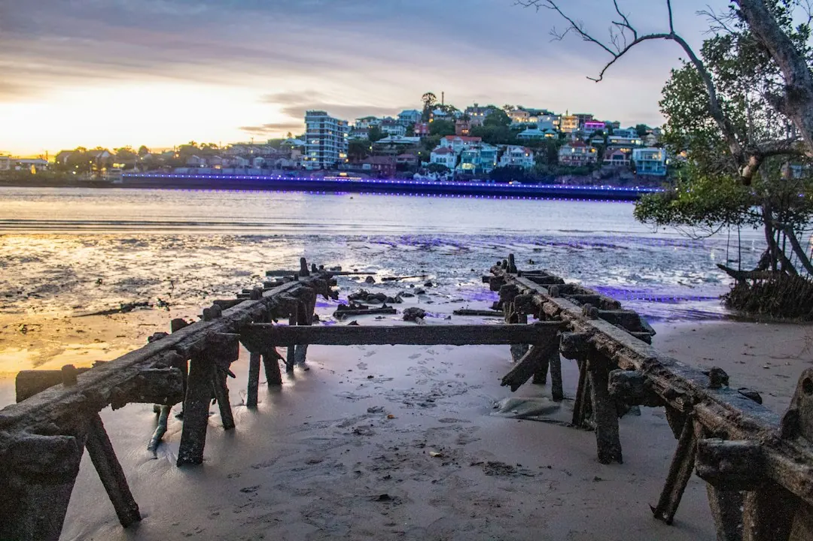

Concrete pool costs in Brisbane vary with excavation, rock, access, spoil removal, finishes, heating and landscaping. Custom shotcrete follows a block's shape, while precast shells can suit yards where access or build time is tight. Before building, confirm plans and engineering approval, plan a compliant barrier before the pool reaches 300 mm of water, and compare quotes line by line. Ask specifically what the contract includes, excludes and allows for site conditions.
For homeowners comparing concrete pool builders brisbane options, the practical decision is how the pool type, block conditions, approvals and written quote fit together.
Concrete Pool Builders Brisbane Explained
Concrete Pools Brisbane describes the choice as a planning exercise shaped by how the pool will be used and by the block itself. A lap pool, family pool, cool-off plunge or attached spa can require a different size, depth and layout, so decide the main purpose before comparing finishes.
Brisbane properties can be flat, sloping or tight, and a pool built in place can follow the yard rather than a catalogue shell. Note the slope, side access, likely machine or crane access, sewer lines and the space needed for fencing. These details affect excavation, layout and the approvals questions worth asking.
- Use a plunge format where a compact pool suits a small block or courtyard.
- Consider a raised or semi-recessed design where the site is sloping, rocky or difficult to dig.
- Discuss an attached or spilling spa when heating and fencing need to be planned with the pool.
Choose the construction format
Custom shotcrete is formed around the site, making it suitable when the shape, slope or access route needs a tailored response. Precast concrete shells are factory-made and craned into the yard, which may be relevant where access or build time is tight. Neither option should be selected from the label alone. Ask how the proposed format changes excavation, lifting access, spoil removal and the written scope.
Resurfacing, repairs and waterproofing are separate questions for an older concrete pool. A worn, stained or cracked surface may need a different inspection and quote from a new build. Above-ground, raised and semi-recessed options also change the relationship between the pool, retaining work, fencing and surrounding ground.
Read every cost line before comparing
Quote differences often come from what is included rather than from the headline pool design. The published guide identifies excavation, rock, spoil removal, finishes, heating and landscaping as cost drivers. It also warns that standard excavation may not include rock, extra depth or spoil removal, so those items should be written clearly.
Use the same brief for each quotation. Include the preferred pool type, intended use, site access notes, slope, known sewer location and any request for a spa, heating, special finish or landscaping. Then compare whether each proposal states who handles excavation, rock, spoil, fencing, approvals and other associated work.
- Ask whether rock excavation is included or separately priced.
- Check whether spoil removal and extra depth have allowances or exclusions.
- Confirm the finish, heating, landscaping and fencing scope in writing.
- Keep the contract, engineering documents and approval records together.
Put approvals and barriers in the right order
The guide says council or a private certifier must approve plans and engineering before construction starts. Building over a sewer or working in a special planning zone can add approval questions. Those issues are best raised before the layout is finalised, because they may affect the pool position, access and construction method.
Queensland pool safety requirements apply to residential pools whether or not children live at the home. The barrier must be certified before the pool holds 300 mm of water or more, and the pool must be registered with QBCC. Fencing, gates, non-climbable zones and signage need to remain compliant.
A certifier-approved temporary barrier generally covers up to three months. Longer use requires another inspection and written permission from the certifier or pool safety inspector. Treat the barrier as part of the build sequence, not as a finishing detail after filling.
Use a written enquiry to narrow the next quote
A useful enquiry includes the suburb, preferred pool type, intended use and any visible site constraints. Add whether the block is sloping, whether access is narrow, whether a crane may be needed, and whether sewer lines or planning controls could affect the position. This gives a contractor something more useful to assess than a request for a generic price.
For contracts over $3,300, the guide says domestic pool contracts generally carry a five-business-day cooling-off period. It also says the builder must arrange Queensland Home Warranty Scheme cover for insurable work above that amount. Ask for the contract and cover details before work begins, and confirm which parts of the proposal are provisional or excluded.
- Define the use. Choose whether the priority is laps, family play, a cool-off plunge or an attached spa.
- Check the site. Record slope, access, sewer lines, likely machinery or crane access and the space needed for fencing.
- Compare scope. Request written inclusions for excavation, rock, spoil removal, finishes, heating, landscaping, fencing and approvals.
- Confirm documents. Review the contract, engineering, approval pathway, barrier plan and any warranty cover before construction starts.
| Option | May suit | Questions to ask |
|---|---|---|
| Custom shotcrete | A block needing a shape, size or depth designed around its conditions | How will slope, access, excavation and engineering affect the design? |
| Precast concrete shell | A yard where access or build time makes craning a consideration | Can a crane reach the site, and are lifting, access and spoil costs included? |
Common questions
What makes one Brisbane concrete pool quote higher than another? Excavation, rock, access, spoil removal, finishes, heating and landscaping can all change the total. Size, extra depth, a spa and the need for smaller machinery or a crane may also affect the scope.
Does every quote include excavation and rock removal? No. The published guide says standard excavation may be included while rock, extra depth or spoil removal are priced separately. Ask for each item to be stated in writing.
When must the pool barrier be certified? It must be certified before the pool holds 300 mm of water or more. A temporary barrier generally covers up to three months, with longer use requiring inspection and written permission.
Can a sloping Brisbane block have a concrete pool? It can be considered through a raised or semi-recessed design, but the slope may affect retaining work, excavation, access and approvals. Those site questions should be resolved before comparing final quotes.
This guide covers concrete pool formats, Brisbane site conditions, quote comparisons, approvals, barriers and contract questions.